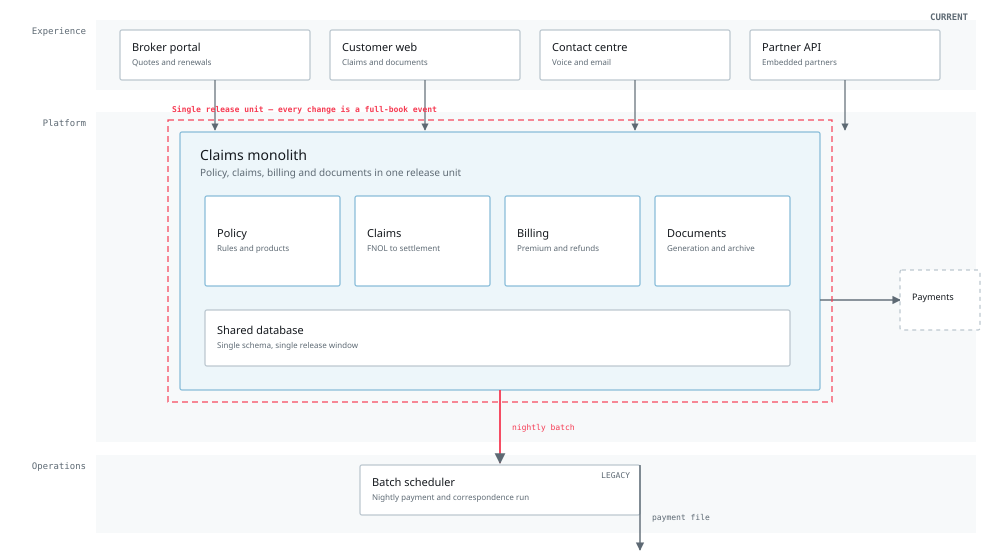
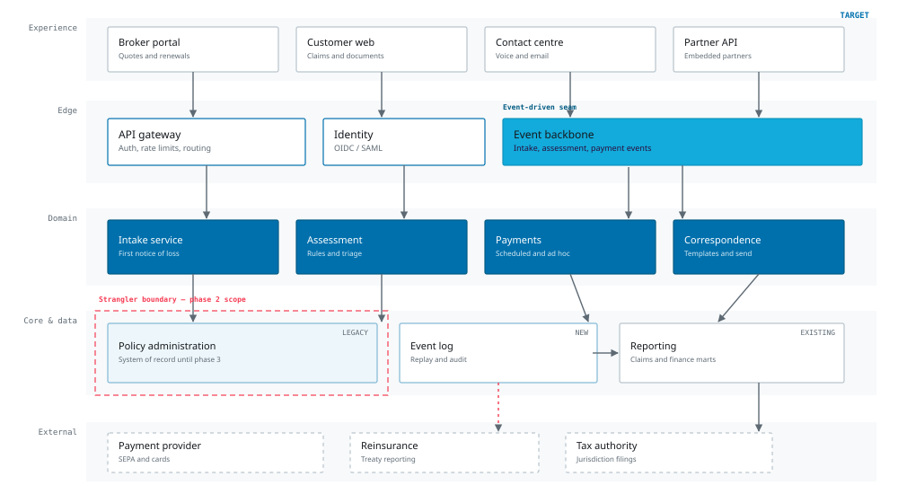

Architecture / Northline claims platform
One event seam. Two release paths. No big-bang cutover.
The target is not a new platform. It is a boundary that lets the claims monolith keep running while one slice at a time earns its way out.
01 / The shape of the change
The architecture is a boundary, not a destination.
Two views. The current state explains why change is expensive. The target state shows where the seam goes and what stays behind it.

Policy, claims, billing and documents share a release cycle. A change to one is a change to all.
Every module reads and writes the same database. There is no contract between them, only convention.
Payments and correspondence run on a schedule. The business day ends when the batch ends.

Services publish facts, not commands. The event log is replayable, auditable and independent of any one consumer.
Policy administration stays the system of record until phase 3. The boundary makes that temporary truth explicit.
Intake, assessment, payments and correspondence each own their data, release and service level.
What this architecture buys, and what it costs
It buys independent release, a replayable audit trail and a credible rollback. It costs schema governance, duplicate-running during transition and a real operations owner for each service. We are choosing the cost deliberately.
02 / Design decisions
Five decisions shape the boundary.
Each decision has a status and a consequence. If a decision changes, the consequence changes with it.
| Decision | Status | Consequence |
|---|---|---|
| Keep policy administration as the system of record until phase 3 | Accepted | No dual-write. Read models are projected from events; policy truth stays in one place. |
| Use an event backbone rather than point-to-point integration | Accepted | One contract, replay and audit. Requires schema ownership and versioning discipline. |
| Strangle intake first, not payments | Accepted | Lower operational risk and faster learning. Payment migration moves to phase 3. |
| No shared database between services | Accepted | Each service owns its store. Reporting consumes the event log, not production tables. |
| Defer correspondence migration | Proposed | Templates stay in the monolith for phase 2. Revisit once the intake slice is stable. |
03 / What we are not doing
A smaller target is easier to defend.
Architecture documents usually fail by adding. This one is useful only if it rules things out.
- Not a lift-and-shift. Moving the monolith to cloud infrastructure would keep the release coupling and add a migration bill.
- Not microservices everywhere. Four services are enough for the first slice. A service per module would multiply operational cost before the team is ready.
- Not a data lake. Reporting consumes the event log. A separate lake is a phase 3 decision, not a prerequisite.
- Not a dual-write. Two systems of record for policy would create a reconciliation problem the business cannot absorb.
| Risk | Sev. | Mitigation |
|---|---|---|
| Event schema drift | High | Named schema owner; versioned contracts; consumer tests in CI |
| Dual-run cost | Med | Time-boxed boundary; exit criteria agreed at week 8 |
| Operations readiness | High | Service owner named in week 1; runbook review before go-live |
| Vendor lock-in at the edge | Med | Open contracts, portable identity, no proprietary event format |
04 / Cutover rules
The boundary moves only when the evidence does.
These rules apply to every slice, not just the first one. They are deliberately hard to waive.
Name the owner
No cutover without a service owner, a runbook and an escalation path that someone has walked.
Prove the fallback
The monolith stays available until the slice has run live for four weeks and the rollback has been tested twice.
Move one number
Each slice has one operating metric, a baseline and a review date. If the number does not move, the boundary does not move.
Retire the path
Once the slice is stable, remove the old route. Leaving both paths alive is how a strangler becomes a permanent tax.
Decision requested
Approve the target architecture direction and the phase 2 strangler boundary. The first slice remains intake. Payments and correspondence stay out of scope until the week 12 gate.
Northline Group is an illustrative client scenario for this reference. The architecture is a teaching example, not a recommendation for a specific environment.